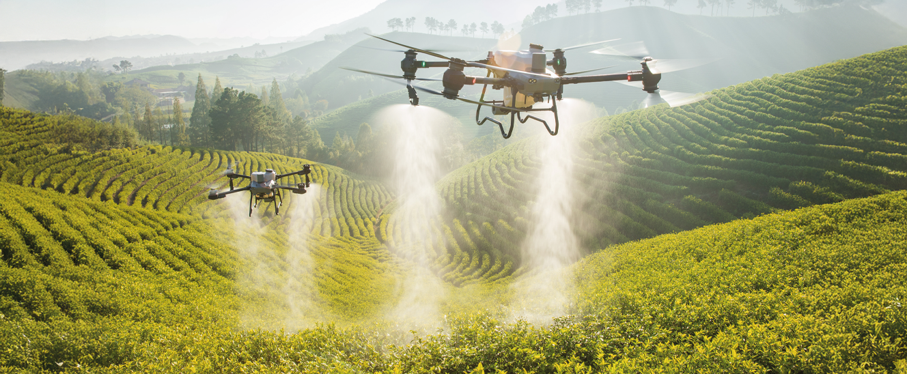

BioMonitor 2026
Uma experiência interativa sobre como tecnologia, dados e cuidado ambiental ajudam a produzir melhor sem avançar sobre a natureza.
Conexões vitais
O ecossistema do agro
Clique em um pilar para ver como campo, tecnologia e preservação dependem um do outro.
Monitor interativo
Biomas e produção sustentável
Selecione um bioma no mapa ou na lista para comparar tecnologias aplicadas ao agro.
Selecione um bioma para analisar dados de produção, tecnologia e conservação.
Status do ecossistema
Produção sustentável
Tecnologia aplicada
Índice bio-digital
0%
Produção e conservação
Tecnologia como ponte entre campo e natureza
Interdependência direta
O agro moderno depende de recursos naturais intactos: solo saudável, chuva regular, água limpa e polinizadores. Preservar é uma estratégia produtiva, não um obstáculo.


Intensificação inteligente
Quando sensores, mapas e manejo integrado aumentam a produtividade por hectare, diminui a pressão para abrir novas áreas e aumenta a chance de recuperar paisagens.
Inteligência operacional
Soluções para o produtor rural
Monitoramento por drones
Imagens aéreas ajudam a identificar falhas de plantio, estresse hídrico e focos de pragas antes que o prejuízo cresça.
Sistemas integrados
ILPF combina lavoura, pecuária e floresta para diversificar renda, proteger o solo e reduzir emissões.
Bioinsumos
Microrganismos benéficos e controle biológico reduzem dependência de químicos e fortalecem a vida do solo.
Paraná em foco
Tecnologia sustentável no campo paranaense
Escolha um ponto no mapa para conhecer vocações produtivas e soluções sustentáveis de diferentes regiões do estado.

Território selecionado
Oeste produtivo
Biogás, cooperativismo e rastreabilidade
A integração entre grãos e produção animal cria oportunidades para transformar resíduos em energia e melhorar o controle da cadeia produtiva.
Soluções em destaque
- Biodigestores e geração de energia renovável.
- Sensores para uso eficiente de água e ração.
- Rastreabilidade entre propriedade, cooperativa e consumidor.

Justiça social e lei
Inclusão, conectividade e legalidade
Pequeno produtor
A tecnologia precisa chegar com assistência técnica, crédito e linguagem simples para também fortalecer a agricultura familiar.
Combate à ilegalidade
Fiscalizar e rastrear cadeias produtivas ajuda a separar o produtor correto de práticas como desmatamento ilegal.
Indicadores didáticos
Impacto da tese bio-digital
Jornada da inovação
Do manejo manual ao ecossistema conectado
-
Passado
Observação manual
Decisões tomadas quase só pela experiência e pelo clima aparente.
-
2026
Dados no campo
Drones, sensores e painéis ajudam a reduzir desperdício e antecipar problemas.
-
2030+
Regeneração guiada
Áreas produtivas e áreas preservadas podem ser planejadas como um sistema único.